At the first launch, you should see a checkbox.
At the first launch, you should see a checkbox.

At the first launch, you should see a checkbox.
1.1  Check the check box to proceed.
Check the check box to proceed.
1.2  The checkbox disappeared in the next launch.
The checkbox disappeared in the next launch.
2.1.1  Click the "ADD WORKSPACE" button #1, or the "+" button at the center of the window #2.
Click the "ADD WORKSPACE" button #1, or the "+" button at the center of the window #2.
2.1.2 Add Workspace Dialog.
2.1.2.1 Input fields, Icons and Buttons:
2.1.2.1.1 "Workspace Name" text field:
2.1.2.1.1.1  Invalid cases that should not be accepted:
Invalid cases that should not be accepted:
2.1.2.1.1.1.1  Only whitespaces.
Only whitespaces.
2.1.2.1.1.1.2  Duplicated name with other workspace (case insensitive).
Duplicated name with other workspace (case insensitive).
2.1.2.1.1.1.3  Only symbols that will be deleted during the sanitization process (such as
Only symbols that will be deleted during the sanitization process (such as |, and /), so the workspace's folder name will be empty.
2.1.2.1.1.2  Otherwise, the name should be accepted - no red border covering the input field -.
Otherwise, the name should be accepted - no red border covering the input field -.
2.1.2.1.2 "Workspace Color" text field:
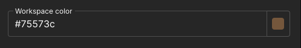
2.1.2.1.2.1  Click the text field or focus on it.
Click the text field or focus on it.
2.1.2.1.2.1.1  A color picker dialog has been displayed.
A color picker dialog has been displayed.
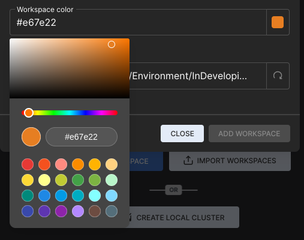
2.1.2.1.2.2  A color must be set, there's no way to let the text field empty.
A color must be set, there's no way to let the text field empty.
2.1.2.1.3 "Workspace Path" text field and its Icon:
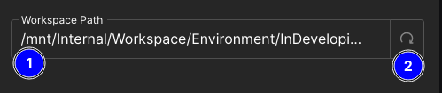
2.1.2.1.3.1 The text field #1.
2.1.2.1.3.1.1  Click the text field.
Click the text field.
2.1.2.1.3.1.1.1  A directory selection dialog has been displayed.
A directory selection dialog has been displayed.
2.1.2.1.3.1.1.2  Invalid cases that should not be accepted:
Invalid cases that should not be accepted:
2.1.2.1.3.1.1.2.1  Inaccessible path for any reason.
Inaccessible path for any reason.
2.1.2.1.3.1.1.2.2  Path where there's a folder with the same name as the workspace's folder - after the sanitization process -.
Path where there's a folder with the same name as the workspace's folder - after the sanitization process -.
2.1.2.1.3.1.1.3  Otherwise, the path should be accepted.
Otherwise, the path should be accepted.
2.1.2.1.3.2 "Set default path" icon #2.
2.1.2.1.3.2.1  Related to test (2.1.2.1.3.1), change the default directory to something else.
Related to test (2.1.2.1.3.1), change the default directory to something else.
2.1.2.1.3.2.2  Click the icon #2.
Click the icon #2.
2.1.2.1.4 Footer buttons.
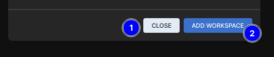
2.1.2.1.4.1 "CLOSE" button #1.
2.1.2.1.4.1.1  The related dialog was hidden when you clicked this button.
The related dialog was hidden when you clicked this button.
2.1.2.1.4.1.2  Same behvior as the
Same behvior as the X icon at the top right of the dialog.
2.1.2.1.4.2 "ADD WORKSPACE" button #2.
2.1.2.1.4.2.1  Clicking this button caused to create a workspace with success feedback.
Clicking this button caused to create a workspace with success feedback.
2.1.2.1.4.2.2  In case there's an invalid input, an error feedback showed up.
In case there's an invalid input, an error feedback showed up.
2.1.2.2 Add bunch of workspaces.
2.1.2.2.1  After finshing the test (2.1.2), add about 3-4 workspaces.
After finshing the test (2.1.2), add about 3-4 workspaces.
2.1.2.2.2  After adding the first workspace with success, the view has been changed and the workspace has been displayed as a card - as the image in embedded under this test -.
After adding the first workspace with success, the view has been changed and the workspace has been displayed as a card - as the image in embedded under this test -.
2.2.1 "Workspace folder" button.
2.2.1.1  Click the button with folder icon - first one from left side - 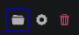 for any added workspace.
Click the button with folder icon - first one from left side - 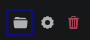 for any added workspace.
2.2.1.1.1  File explorer opened pointing at the workspace's folder.
File explorer opened pointing at the workspace's folder.
2.2.1.1.2  All workspaces folders - espcially with custom path - have been opened with success.
All workspaces folders - espcially with custom path - have been opened with success.
2.2.2 "Workspace settings" button.
2.2.2.1  Click the button cog icon - second one from left side -
Click the button cog icon - second one from left side -  for any added workspace.
for any added workspace.
2.2.2.2  Attempt to change the name, color and path of a workspace - all at once, or separately -.
Attempt to change the name, color and path of a workspace - all at once, or separately -.
2.2.3 "Delete workspace" button.
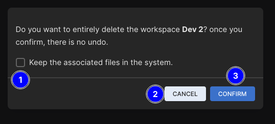
2.2.3.1  Click the button with trash icon - third one from left side -
Click the button with trash icon - third one from left side -  for any added workspace.
for any added workspace.
2.2.3.2  Click the "CANCEL" button #2.
Click the "CANCEL" button #2.
2.2.3.3  Click the "CONFIRM" button #3.
Click the "CONFIRM" button #3.
2.2.3.4  Click the button with trash icon of another workspace.
Click the button with trash icon of another workspace.
2.2.3.4.1  Check the checkbox #1 then click the "CONFIRM" button #3.
Check the checkbox #1 then click the "CONFIRM" button #3.
2.2.3.4.1.1  The related workspace has been deleted and its card has been removed from the UI, in addation, its files has been kept in the system.
The related workspace has been deleted and its card has been removed from the UI, in addation, its files has been kept in the system.
_DEL_{randomStr}, exampleDEV 2_DEL_fa4b8.
2.3.1 Click the "ENTER" button for any added workspace.
2.3.1.1 The view has been changed.
2.3.1.2 Click the "ADD CONNECTION" button #1, or the "+" button at the center of the window #2, or the "ADD CONNECTION" button #3 at the top right side of the window.
2.3.1.2.1 A related dialog (2.3.2) has been displayed when clicked the "ADD CONNECTION" button of both #1 or #3.
2.3.1.2.2 Same behavior for the "+" button.
2.3.2 Add Connection Dialog.
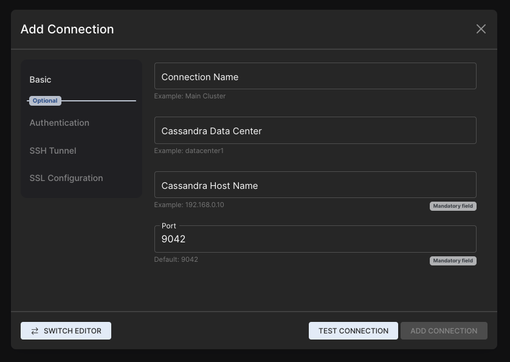
2.3.2.1 Input fields, Icons and Buttons:
2.3.2.1 "Basic" section.
2.3.2.1.1 "Connection Name" text field:
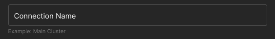
2.3.2.1.1.1  Invalid cases that should not be accepted:
Invalid cases that should not be accepted:
2.3.2.1.1.1.1  Only whitespaces.
Only whitespaces.
2.3.2.1.1.1.2  Duplicated name with other connection in the same workspace (case insensitive).
Duplicated name with other connection in the same workspace (case insensitive).
2.3.2.1.1.1.3  Only symbols that will be deleted during the sanitization process (such as
Only symbols that will be deleted during the sanitization process (such as |, and /), so the connection's folder name will be empty.
2.3.2.1.1.1.4  Otherwise, the name should be accepted.
Otherwise, the name should be accepted.
2.3.2.1.2 "Cassandra Data Center" text field:
2.3.2.1.2.1  This field can be left empty without stopping the testing/adding process.
This field can be left empty without stopping the testing/adding process.
2.3.2.1.2.2  When adding a data center that doesn't exist, an error should been shown.
When adding a data center that doesn't exist, an error should been shown.
2.3.2.1.3 "Cassandra Host Name" text field:
2.3.2.1.4 "Port" text field:
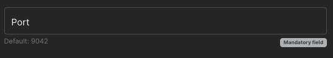
2.3.2.2 "Authentication" section.
2.3.2.2.1  When keeping the checkbox #1 checked, credentials should be saved in the OS keychain.
When keeping the checkbox #1 checked, credentials should be saved in the OS keychain.
2.3.2.2.2  When unchecking the checkbox #1, credentials should not be saved in the OS keychain, and a dialog will show up with each test/connect process.
When unchecking the checkbox #1, credentials should not be saved in the OS keychain, and a dialog will show up with each test/connect process.
2.3.2.3 "SSH Tunnel" section.
2.3.2.3.1  When keeping the checkbox #1 checked, credentials should be saved in the OS keychain.
When keeping the checkbox #1 checked, credentials should be saved in the OS keychain.
2.3.2.3.2  When unchecking the checkbox #1, credentials should not be saved in the OS keychain, and a dialog will show up with each test/connect process.
When unchecking the checkbox #1, credentials should not be saved in the OS keychain, and a dialog will show up with each test/connect process.
2.3.2.4 "SWITCH EDITR" button.
2.3.2.4.1  Click the button #1 in the dialog's footer section.
Click the button #1 in the dialog's footer section.
2.3.2.4.1.1  The view in the dailog changed to an editor.
The view in the dailog changed to an editor.
To expand the editor, click the expand icon
beside the button #1, click the icon again to shrink the editor.
You can also zoom-in and out the editor using CTRL and the mouse wheel.
2.3.2.4.1.2  Attempt to change any value in the editor like;
Attempt to change any value in the editor like; hostname under [connection] section.
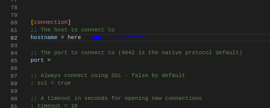
2.3.2.4.1.3  Attempt to paste a cqlsh.rc content.
Attempt to paste a cqlsh.rc content.
2.3.2.4.1.3.1  For a valid
For a valid cqlsh.rc file you have, attempt to paste it entirely in the editor.
2.3.2.4.1.4 Pre and post connection scripts.
0; which indicate success, any other returned value will be considered to be failure.
While focusing on the editor, press CTRL+F to search inside it.
Look for
[preconnect]and[postconnect]sections, and have a look at the description.
 2.3.2.4.1.4.1 Add scripts/executables/bat files paths to be executed in the pre-connection phase.
2.3.2.4.1.4.1 Add scripts/executables/bat files paths to be executed in the pre-connection phase.
 2.3.2.4.1.4.2 Add scripts/executables/bat files paths to be executed in the post-connection phase.
2.3.2.4.1.4.2 Add scripts/executables/bat files paths to be executed in the post-connection phase.
2.3.2.5 "TEST CONNECTION" button.
2.3.2.5.1  After finishing previous tests, click the button #1 in the dialog's footer section.
After finishing previous tests, click the button #1 in the dialog's footer section.
2.3.2.5.1.1  A spinner #1 showed up, and an
A spinner #1 showed up, and an X button #2 showed up after a short time.
2.3.2.5.1.1.1  Click the
Click the X button #2.
2.3.2.5.1.2  On failure, an error showed up with details about the cause of it.
On failure, an error showed up with details about the cause of it.
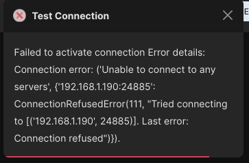
2.3.2.5.1.3  On success, the button "ADD CONNECTION" #1 enabled now, and a sucess message #2 showed up.
On success, the button "ADD CONNECTION" #1 enabled now, and a sucess message #2 showed up.
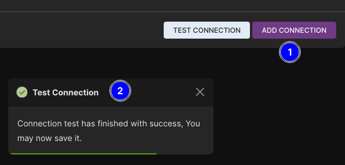
2.3.2.6 "ADD CONNECTION" button.
2.3.2.6.1  After finshing the test (2.3.2.5) with success, the button #1 should be enabled, click it.
After finshing the test (2.3.2.5) with success, the button #1 should be enabled, click it.
2.3.2.6.1.1  On success.
On success.
2.3.2.6.1.1.1  The connection has been added under the current active workspace.
The connection has been added under the current active workspace.
2.3.2.6.1.1.2  The added connection is ready to be activated - green glowing circle, cassandra version and data center are known and provided -.
The added connection is ready to be activated - green glowing circle, cassandra version and data center are known and provided -.
2.3.2.6.1.2  On failure, an error showed up with details about the cause of it.
On failure, an error showed up with details about the cause of it.
2.3.3 Add bunch of connections.
2.3.3.1  After finshing the test (2.3.2), add about 3-4 connections.
After finshing the test (2.3.2), add about 3-4 connections.
2.3.3.2  All connections have been added with success feedback.
All connections have been added with success feedback.
2.3.3.3  After adding the first connection with success, the view has been changed and the connection has been displayed as a card - as the image in embedded under this test -.
After adding the first connection with success, the view has been changed and the connection has been displayed as a card - as the image in embedded under this test -.
.
2.4.1 "Connection folder" button.
2.4.1.1  Click the button with folder icon - first one from left side - for any added connection.
Click the button with folder icon - first one from left side - for any added connection.
2.4.2 "Connection settings" button.
2.4.2.1  Click the button cog icon - second one from left side - for any added connection.
Click the button cog icon - second one from left side - for any added connection.
2.4.2.1.1  An associated dialog should be shown.
An associated dialog should be shown.
2.4.2.1.2  Conditions of adding a connection should be applied in this case too.
Conditions of adding a connection should be applied in this case too.
2.4.5 "Delete connection" button.
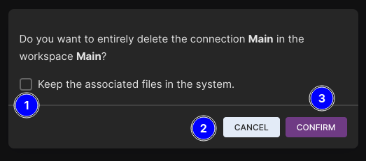
2.4.5.1  Click the button with trash icon third one from left side - for any added connection.
Click the button with trash icon third one from left side - for any added connection.
2.4.5.2  Click the "CANCEL" button #2.
Click the "CANCEL" button #2.
2.4.5.3  Click the "CONFIRM" button #3.
Click the "CONFIRM" button #3.
2.4.5.4  Click the button with trash icon of another connection.
Click the button with trash icon of another connection.
2.4.5.4.1  Check the checkbox #1 then click the "CONFIRM" button #3.
Check the checkbox #1 then click the "CONFIRM" button #3.
2.4.5.4.1.1  The related connection has been deleted and its card has been removed from the UI, in addation, its files has been kept in the system.
The related connection has been deleted and its card has been removed from the UI, in addation, its files has been kept in the system.
The connection's folder has been changed by adding a prefix
_DEL_{randomStr}, exampleMain_DEL_fa4b8.
2.4.6 "TEST CONNECTION" button.
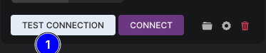
2.4.6.1  Click the button #1 of any added connection.
Click the button #1 of any added connection.
2.4.6.1.1 Related to tests (2.3.2.2.2) and (2.3.2.3.2), a related dialog would show up.
2.4.6.1.2  Changes happend in the UI - a spinner #1 showed up, and an
Changes happend in the UI - a spinner #1 showed up, and an X button #2 showed up after a short time..
2.4.6.1.2.1  Click the
Click the X button #2.
2.4.6.1.2  The test process finished with feedback - of sccuess or failure -.
The test process finished with feedback - of sccuess or failure -.
2.4.7 "CONNECT" button.
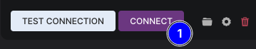
 2.4.7.1 Click the button #1 of any added connection.
2.4.7.1 Click the button #1 of any added connection.
- Otherwise, clicking this button will cause the same behavior in test (2.4.6.1), then it'll create a work area.
2.4.7.1.1  After a succesful connection test - either automaticlly related to test (2.4.6) or manually -, a work area showed up.
After a succesful connection test - either automaticlly related to test (2.4.6) or manually -, a work area showed up.
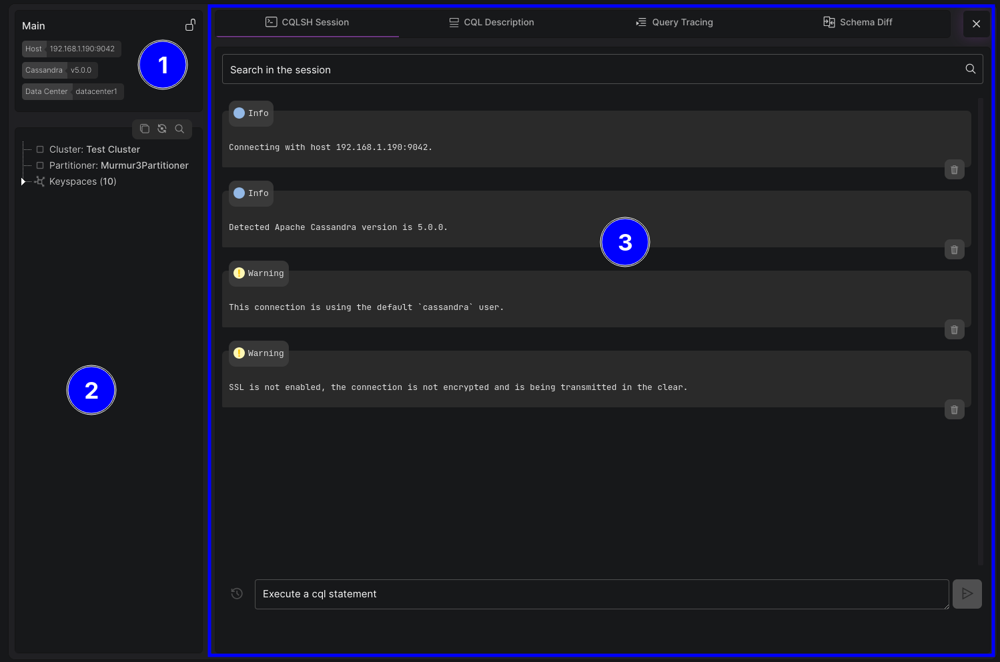
This test assumes that test (2.4.6) and (2.4.7) were finished with success.
2.4.1.1 "Connection Info Card" #1.
2.4.1.1.1  Hostname, Cassandra version and the data center are correctly provided.
Hostname, Cassandra version and the data center are correctly provided.
2.4.1.1.2  The lock icon at the top right side of the card
The lock icon at the top right side of the card  .
.
2.4.1.1.2.1  In case SSL is not enabled, it's an opened-lock with tooltip "SSL is not enabled".
In case SSL is not enabled, it's an opened-lock with tooltip "SSL is not enabled".
2.4.1.1.2.2  In case SSL is enabled, it's a colored closed-lock with tooltip "SSL is enabled".
In case SSL is enabled, it's a colored closed-lock with tooltip "SSL is enabled".
2.4.1.2 "Metadata Tree View" #2.
2.4.1.2.1  Info about the connected-to cluster/node are shown correctly.
Info about the connected-to cluster/node are shown correctly.
2.4.1.2.1.1  Cluster name and the partitioner.
Cluster name and the partitioner.
2.4.1.2.1.2  List of all keyspaces - virtual and system keyspaces are grouped together under Virtual Keyspaces (
List of all keyspaces - virtual and system keyspaces are grouped together under Virtual Keyspaces (${numberOfVirtualKeyspaces}) and System Keyspaces (${numberOfSystemKeyspaces}) respectively.
2.4.1.2.1.2.1  All tables inside each keyspace.
All tables inside each keyspace.
2.4.1.2.2 Metadata Tree View Actions.
2.4.1.2.2.1  Click the copy icon #1.
Click the copy icon #1.
2.4.1.2.2.1.1  The entire metadata has been copied to the clipboard as JSON string, the workbench showed a feedback of success with the size of the copied JSON string.
The entire metadata has been copied to the clipboard as JSON string, the workbench showed a feedback of success with the size of the copied JSON string.
2.4.1.2.2.2  Click the refresh icon #2.
Click the refresh icon #2.
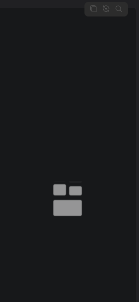
2.4.1.2.2.2.1  The loader has been shown again.
The loader has been shown again.
2.4.1.2.2.2.2  All metadata actions were disabled during the refresh process.
All metadata actions were disabled during the refresh process.
2.4.1.2.2.2.3  The tree view has been rendered again.
The tree view has been rendered again.
2.4.1.2.2.2  Click the search icon #3.
Click the search icon #3.
2.4.1.2.2.2.1 An input field showed up at the top of the tree view.
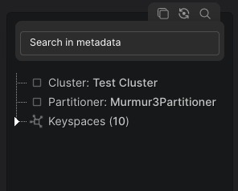
2.4.1.2.2.2.1.1  Attempt to search for something, like
Attempt to search for something, like frozen.
2.4.1.2.2.2.1.1.1  The tree has been filtered.
The tree has been filtered.
2.4.1.2.2.2.1.1.2  The number of search results #1 and the ID of the current result #1 are displayed on the right side of the input field.
The number of search results #1 and the ID of the current result #1 are displayed on the right side of the input field.
2.4.1.2.2.2.1.1.3  Up and down arrows #2 are displayed on the right side of the input field to navigate between results.
Up and down arrows #2 are displayed on the right side of the input field to navigate between results.
2.4.1.2.2.2.1.1.4  Results are highlighted well and distinguishable #3.
Results are highlighted well and distinguishable #3.
2.4.1.2.2.2.1.1.5  All results are correct - the search string certainly exists in the highlighted nodes - #3.
All results are correct - the search string certainly exists in the highlighted nodes - #3.
2.4.1.2.2.2.1.1.6  Search is case insensitive.
Search is case insensitive.
2.4.1.2.2.2.1.2  Clear the input field.
Clear the input field.
2.4.1.2.2.2.1.3  Click the search icon again and search for something.
Click the search icon again and search for something.
2.4.1.2.2.2.1.3.1  Click the search icon again wthiout clearing the field.
Click the search icon again wthiout clearing the field.
2.4.1.2.3 Resize the left side of the workarea.
2.4.1.2.3.1  Move the mouse closer to the left edge of the workspace.
Move the mouse closer to the left edge of the workspace.
2.4.1.3 "Workarea Sections" #3.
2.4.1.3.1 "CQLSH Session" Section.
#1: The workarea's different sections, we can navigate to any section via its tab.
#2: The search area in the "CQLSH SESSION" section, here we can search for specific string in the output #3.
#3: The blocks' container, where all output of the current session are shown here as blocks, the block consist of:
#5 The header: Either title, or cql statement(s).
#6 The body: The content of the block, either plain text, or rendered tables and objects.
#7: Actions: different block's actions like delete, copy, query tracing, download and more.
#4: Execution area: where we type and execute cql statements or cqlsh commands, and browser statements history.
2.4.1.3.1.1 "Execution Area" #4.
2.4.1.3.1.1.1  Execute simple statement like
Execute simple statement like tracing on.
2.4.1.3.1.1.1.1  Focus on the input field in the execution area.
Focus on the input field in the execution area.
2.4.1.3.1.1.1.2  Start typing
Start typing t letter.
2.4.1.3.1.1.1.3  Type
Type tr letters:
truncate word is suggested by the workbench to be auto typed.2.4.1.3.1.1.1.4  Click
Click TAB.
2.4.1.3.1.1.1.4.1  The word
The word truncate has been auto typed.
2.4.1.3.1.1.1.4.2  Click
Click TAB key again.
tracing has been auto typed.2.4.1.3.1.1.1.5  Click
Click TAB key multiple times.
2.4.1.3.1.1.1.6  Continue with typing
Continue with typing tracing on, now either click ENTER key, or the execution button at the right side of the area.
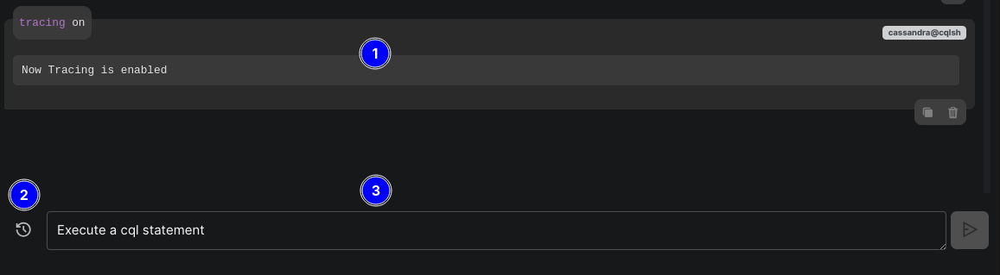
2.4.1.3.1.1.1.6.1  The statement has been executed and the input field has been cleared #3.
The statement has been executed and the input field has been cleared #3.
2.4.1.3.1.1.1.6.2  The statement is syntax highlighted.
The statement is syntax highlighted.
2.4.1.3.1.1.1.6.3  A new block showed up at the bottom of the blocks' container #1.
A new block showed up at the bottom of the blocks' container #1.
2.4.1.3.1.1.1.6.3.1  Hover the mouse closer to the block's statement.
Hover the mouse closer to the block's statement.
2.4.1.3.1.1.1.6.4  The history button at the left side of the input field has been enabled #2.
The history button at the left side of the input field has been enabled #2.
2.4.1.3.1.1.2  Execute statement with records like
Execute statement with records like select * from system_views.clients;.
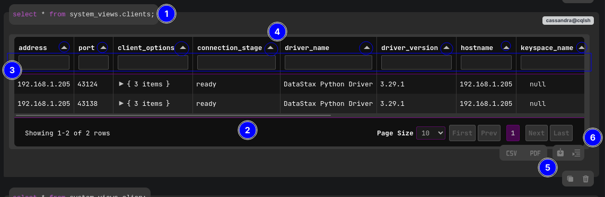
2.4.1.3.1.1.2.1  Type the statement
Type the statement select * from system_views.client.
2.4.1.3.1.1.2.1.1  Without typing a semicolon at the end
Without typing a semicolon at the end ;, the execution button still disabled and we can't execute the statement.
2.4.1.3.1.1.2.1.2  Type
Type ; at the end and execute the statement.
2.4.1.3.1.1.2.1.2.1  The statement has been executed and the input field has been cleared.
The statement has been executed and the input field has been cleared.
2.4.1.3.1.1.2.1.2.2  The statement is syntax highlighted #1.
The statement is syntax highlighted #1.
2.4.1.3.1.1.2.1.2.3  A new block showed up at the bottom of the blocks' container.
A new block showed up at the bottom of the blocks' container.
2.4.1.3.1.1.2.1.2.3.1  The workbench atuomaticlly scrolled to the bottom of the container.
The workbench atuomaticlly scrolled to the bottom of the container.
2.4.1.3.1.1.2.1.2.3.2  Inside the block a table has been rendered containing the related table's columns and records #2.
Inside the block a table has been rendered containing the related table's columns and records #2.
2.4.1.3.1.1.2.1.2.3.2.1  By typing inside the text fields of any column, records have been filtered #3.
By typing inside the text fields of any column, records have been filtered #3.
2.4.1.3.1.1.2.1.2.3.2.2  The order of the columns have been changed by dragging and dropping them.
The order of the columns have been changed by dragging and dropping them.
2.4.1.3.1.1.2.1.2.3.2.3  The order of records have been changed by clicking the right side arrow inside headers #4.
The order of records have been changed by clicking the right side arrow inside headers #4.
2.4.1.3.1.1.2.1.2.3.2.4  Click the download icon at the bottom right of the container #5.
Click the download icon at the bottom right of the container #5.
2.4.1.3.1.1.2.1.2.3.2.4.1  Two options showed up to download the table as either CSV or PDF formats #5.
Two options showed up to download the table as either CSV or PDF formats #5.
2.4.1.3.1.1.2.1.2.3.2.4.2  Download the table in both formats.
Download the table in both formats.
2.4.1.3.1.1.2.1.2.3.3 "Query Tracing" feature.
2.4.1.3.1.1.2.1.2.3.3.1  Click the tracing icon at the bottom right of the container #6.
Click the tracing icon at the bottom right of the container #6.
2.4.1.3.1.1.2.1.2.3.3.2  Tab "Query Tracing" is now the active one, the section has been changed to query tracing results.
Tab "Query Tracing" is now the active one, the section has been changed to query tracing results.
2.4.1.3.1.1.2.1.2.3.3.3  The tracing results of the statement/query
The tracing results of the statement/query select * from system_views.clients; is showed up.
2.4.1.3.1.1.2.1.2.3.3.3.1  Click the header badge at the top left side of the block #1.
Click the header badge at the top left side of the block #1.
2.4.1.3.1.1.2.1.2.3.3.3.1.1  The view has been minized to charts only.
The view has been minized to charts only.
2.4.1.3.1.1.2.1.2.3.3.3.1.2  Click the header badge again #1.
Click the header badge again #1.
2.4.1.3.1.1.2.1.2.3.3.3.2  Click the copy button at the top right side of the activities table #2.
Click the copy button at the top right side of the activities table #2.
2.4.1.3.1.1.3  Execute bunch of statements with different cases.
Execute bunch of statements with different cases.
2.4.1.3.1.1.3.1  Execute two statements in one action like
Execute two statements in one action like SELECT * FROM system_schema.keyspaces; select * from system_views.clients;.
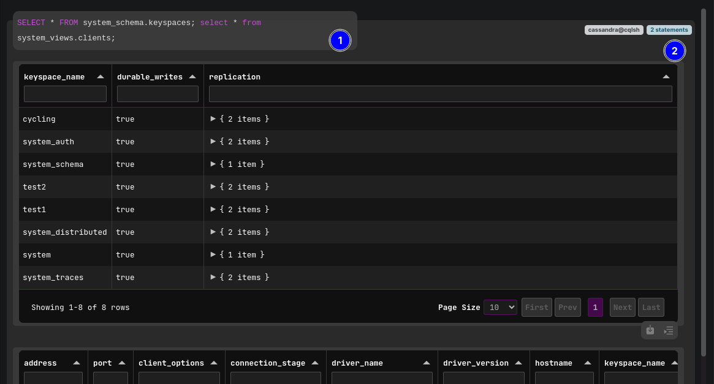
Statements can be executed line by line instead of one line - make sure to click SHIFT+ENTER to add new line in the input field -, like:
SELECT * FROM system_schema.keyspaces; select * from system_views.clients;
2.4.1.3.1.1.3.1.1  Both statements have been executed, and a new block showed up with two outputs #1.
Both statements have been executed, and a new block showed up with two outputs #1.
2.4.1.3.1.1.3.1.2  A new right side badge showed up with
A new right side badge showed up with 2 statements phrase #2.
2.4.1.3.1.1.3.2  Execute three statements in one action like
Execute three statements in one action like SELECT * FROM system_schema.keyspaces; select * from system.peers; select * from system_views.clients;.
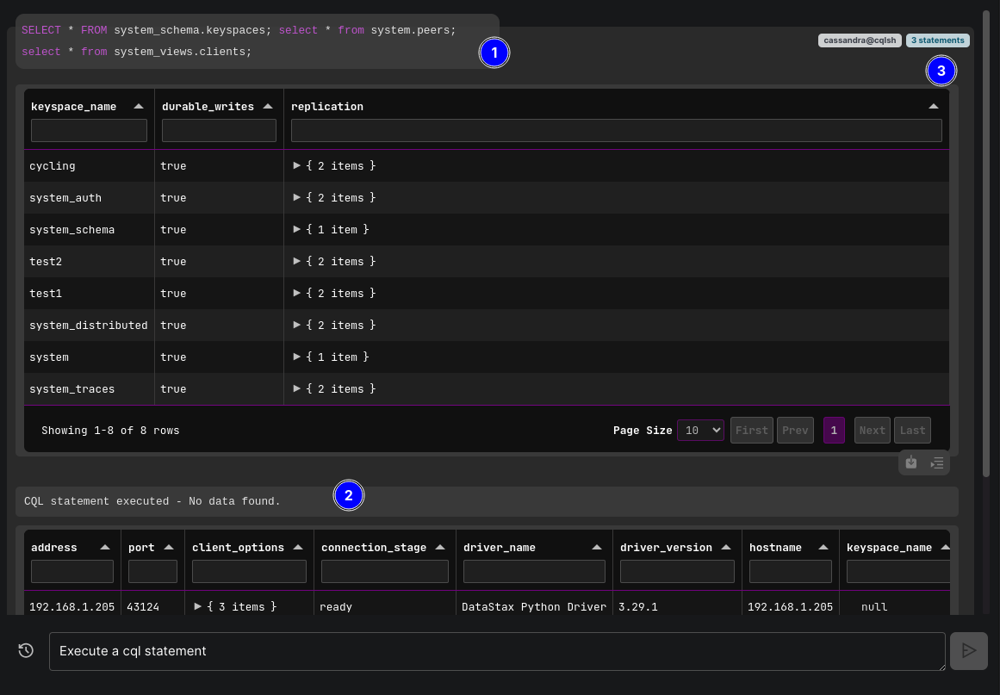
2.4.1.3.1.1.3.2.1  The three statements have been executed, and a new block showed up with three outputs #1.
The three statements have been executed, and a new block showed up with three outputs #1.
2.4.1.3.1.1.3.2.2  The output of the second statement
The output of the second statement select * from system.peers; is "CQL statement executed - No data found" #2.
2.4.1.3.1.1.3.2.3  A new right side badge showed up with
A new right side badge showed up with 3 statements phrase #3.
2.4.1.3.1.1.3.3  Execute invalid statement that would interrupt the execution flow like
Execute invalid statement that would interrupt the execution flow like not_valid';.
2.4.1.3.1.1.3.3.1  The statement has been executed, and a new block showed up.
The statement has been executed, and a new block showed up.
2.4.1.3.1.1.3.3.2  After a short time, an
After a short time, an X button #1 showed up with pinned tooltip #2 about an interruption of the execution flow.
2.4.1.3.1.1.3.3.2.1  Without clicking the button #1, there's no way to run further statements or interact freely in the enhanced terminal.
Without clicking the button #1, there's no way to run further statements or interact freely in the enhanced terminal.
2.4.1.3.1.1.3.3.2.2  After clicking the button #1, the infitie loader has been removed from the block and an info message showed up, and the interruption has been handled.
After clicking the button #1, the infitie loader has been removed from the block and an info message showed up, and the interruption has been handled.
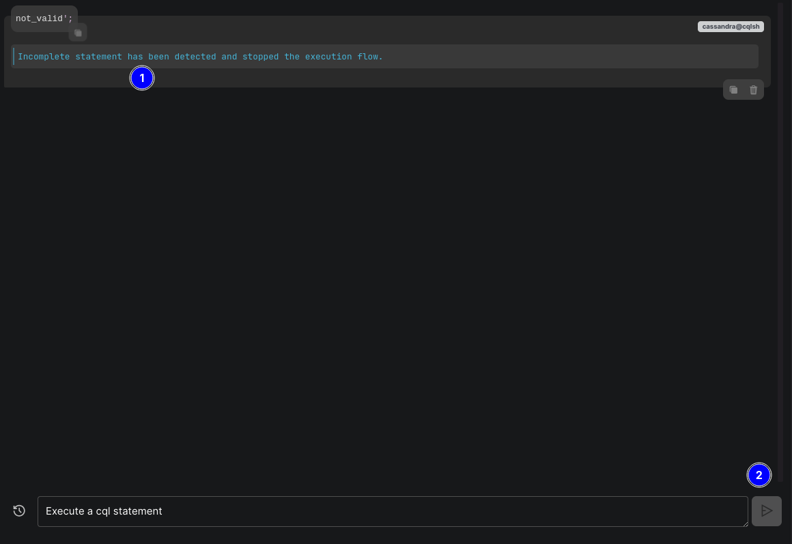
2.4.1.3.1.1.3.4  Execute three statements in one action and one of them is invalid.
Execute three statements in one action and one of them is invalid.
2.4.1.3.1.1.3.4.1  Execute all of them in one line like
Execute all of them in one line like SELECT * FROM system_schema.keyspaces; invalid'; select * from system.peers;.
2.4.1.3.1.1.3.4.2  Execute them and put each one in line like:
Execute them and put each one in line like:
SELECT * FROM system_schema.keyspaces;
invalid';
select * from system.peers;
X button the info message showed up at the bottom of the block.2.4.1.3.1.1.3.4.3  Change the order of the statements by putting the invalid statement at first, like:
Change the order of the statements by putting the invalid statement at first, like:
invalid';
SELECT * FROM system_schema.keyspaces;
select * from
2.4.1.3.1.1.3.4.4  Change the order of the statemeents again by putting the invalid statement at last, like:
Change the order of the statemeents again by putting the invalid statement at last, like:
SELECT * FROM system_schema.keyspaces;
select * from
invalid';
2.4.1.3.1.1.3.4.5  The first and second statements have been executed, then the execution flow stopped.
The first and second statements have been executed, then the execution flow stopped.
X button the info message showed up at the bottom of the block."Invalid" descitpion in Cassandra context refers to different states, here, however, it refers to statement that causes the execution flow to be stopped waiting for interaction from the user, in cqlsh tool those kind of statements causes this:

This is different from an "invalid" statement that might return an error like attempting to select from a table that doesn't exist, in this case the execution flow won't be interrupted, and actually if we executed
invalid;without the single quote then this statement would be considered to be invalid but won't cause an execution flow interruption.
2.4.1.3.1.1.4  Create new keyspace and table.
Create new keyspace and table.
2.4.1.3.1.1.4.1  Create new keyspace statement like
Create new keyspace statement like CREATE KEYSPACE test1 WITH replication = {'class': 'SimpleStrategy', 'replication_factor': '1'} AND durable_writes = true;.
2.4.1.3.1.1.4.1.1  A new block showed up at the bottom of the container with output
A new block showed up at the bottom of the container with output CQL statement executed.
2.4.1.3.1.1.4.1.2  The metadata tree view has been refreshed automaticlly.
The metadata tree view has been refreshed automaticlly.
test1 exists in the tree view.2.4.1.3.1.1.4.1.3  Re-execute the same statement.
Re-execute the same statement.
2.4.1.3.1.1.4.1.3.1  A new block showed up with error output like
A new block showed up with error output like AlreadyExists: Keyspace 'test1' already exists.
2.4.1.3.1.1.4.1.3.2  The tree view hasn't been refreshed this time.
The tree view hasn't been refreshed this time.
2.4.1.3.1.1.4.2  Create new table statement like
Create new table statement like CREATE TABLE test1.test_table (id timeuuid PRIMARY KEY, num int);.
2.4.1.3.1.1.4.2.1  A new block showed up at the bottom of the container with output
A new block showed up at the bottom of the container with output CQL statement executed.
2.4.1.3.1.1.4.2.2  The metadta tree view has been refreshed automaticlly.
The metadta tree view has been refreshed automaticlly.
test_table in keyspace test1 exists in the tree view.2.4.1.3.1.1.4.2.3  Re-execute the same statement.
Re-execute the same statement.
2.4.1.3.1.1.4.2.3.1  A new block showed up with error output like
A new block showed up with error output like AlreadyExists: Table 'test1.test_table' already exists.
2.4.1.3.1.1.4.2.3.2  The tree view hasn't been refreshed this time.
The tree view hasn't been refreshed this time.
2.4.1.3.1.1.5  History Statements.
History Statements.
2.4.1.3.1.1.5.1  Click the history icon at the left side of the execution area.
Click the history icon at the left side of the execution area.
2.4.1.3.1.1.5.1.1 A list showed up contains statements that have been executed.
2.4.1.3.1.1.5.1.1.1  Click the area #3, or area #2 around the icons - the background color will be changed indicating a possible click -.
Click the area #3, or area #2 around the icons - the background color will be changed indicating a possible click -.
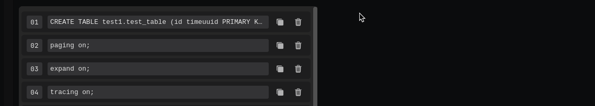
2.4.1.3.1.1.5.1.1.1.1  The statement has been filled in the input text automtaiclly.
The statement has been filled in the input text automtaiclly.
2.4.1.3.1.1.5.1.1.1.2  The list has been hidden.
The list has been hidden.
2.4.1.3.1.1.5.1.1.2  Open the list again, and click the copy icon #1 for any statement.
Open the list again, and click the copy icon #1 for any statement.
2.4.1.3.1.1.5.1.1.2.1  The statement has been copied to the clipboard.
The statement has been copied to the clipboard.
2.4.1.3.1.1.5.1.1.2.2  The list hasn't been hidden, it still displayed.
The list hasn't been hidden, it still displayed.
2.4.1.3.1.1.5.1.1.3  Click the trash icon #2 for any statement.
Click the trash icon #2 for any statement.
2.4.1.3.1.1.5.1.1.4  Click the button #4 at the bottom right side of the list.
Click the button #4 at the bottom right side of the list.
2.4.1.3.1.1.5.1.1.4.1  The list has been hidden as all statements have been deleted.
The list has been hidden as all statements have been deleted.
2.4.1.3.1.1.5.1.1.4.2  The history icon has been disabled.
The history icon has been disabled.
2.4.1.3.1.1.5.1.1.5  Execute any statement like
Execute any statement like expand on.
2.4.1.3.1.2 "Blocks Search Area" #2.
2.4.1.3.1.2.1  Click or focus on the search input field #1.
Click or focus on the search input field #1.
2.4.1.3.1.2.1.1  Type something to search for in the blocks, like
Type something to search for in the blocks, like tracing.
2.4.1.3.1.2.1.1.1  Blocks have been filtered with success.
Blocks have been filtered with success.
2.4.1.3.1.2.1.2  Clear the text inside the input field.
Clear the text inside the input field.
2.4.1.3.1.3 "Blocks Container" #3.
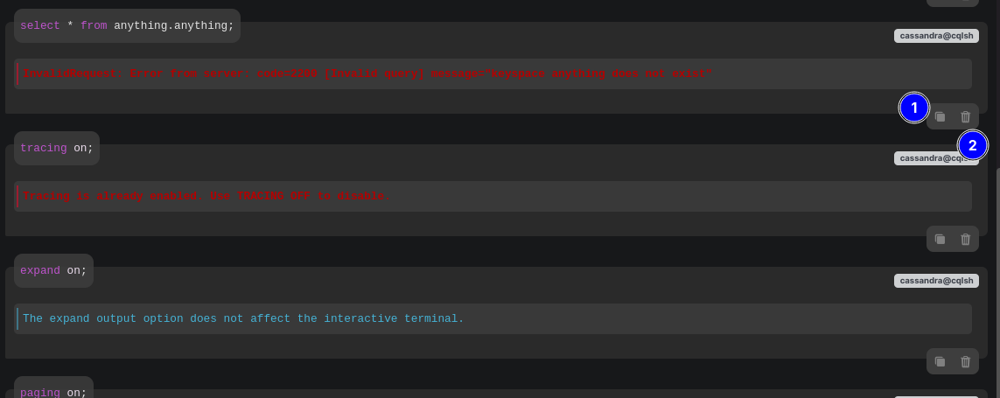
2.4.1.3.1.3.1  Copy block.
Copy block.
2.4.1.3.1.3.1.1  Click the copy icon #1 of any created block.
Click the copy icon #1 of any created block.
2.4.1.3.1.3.2  Delete block.
Delete block.
2.4.1.3.1.3.2.1  Click the trash icon of any created block.
Click the trash icon of any created block.
2.4.1.3.1.3.2.2  Delete all created block.
Delete all created block.
2.4.1.3.1.3.2.2.1  The blocks' container is empty now and there's an icon with message indicates that.
The blocks' container is empty now and there's an icon with message indicates that.
2.4.1.3.2 "CQL Description" Section.
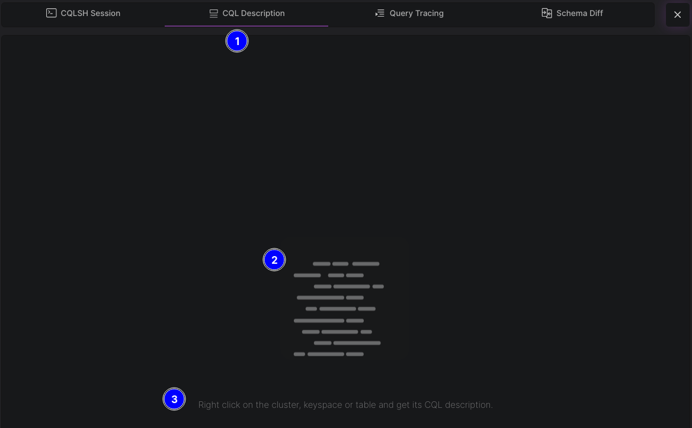
2.4.1.3.2.1  Click the tab #1.
Click the tab #1.
2.4.1.3.2.2  Back to the metadata tree view (2.4.1.2).
Back to the metadata tree view (2.4.1.2).
2.4.1.3.2.2.1  Right mouse click at nodes like the entire cluster, any keyspace, table, and index. For example, right click the
Right mouse click at nodes like the entire cluster, any keyspace, table, and index. For example, right click the Cluster: {Name} node.
2.4.1.3.2.2.1.1  A right-click context menu showed up.
A right-click context menu showed up.
2.4.1.3.2.2.1.1.1  Click the menu's item
Click the menu's item Get CQL Description.
2.4.1.3.2.2.1.1.1.1  A spinner showed up at the left side of the node.
A spinner showed up at the left side of the node.
2.4.1.3.2.2.1.1.1.2  An editor showed up in the
An editor showed up in the CQL Description section with the cql description of the entire cluster.
2.4.1.3.2.2.1.1.1.2.1  Click the
Click the Expand Editor button #1.
2.4.1.3.2.2.1.1.1.2.1.2  Click the button #1 again.
Click the button #1 again.
2.4.1.3.2.2.1.1.1.2.1.3  Now back to the "CQLSH Session" section (2.4.1.3.1).
Now back to the "CQLSH Session" section (2.4.1.3.1).
2.4.1.3.2.2.2  Expand the
Expand the Keyspaces (${numOfKeyspaces}) node.
2.4.1.3.2.2.2.1  Right mouse click at any keyspace - you might need to expand either
Right mouse click at any keyspace - you might need to expand either Virtual Keyspaces or System Keyspaces node -.
2.4.1.3.2.2.2.1.1  A spinner showed up at the left side of the node.
A spinner showed up at the left side of the node.
2.4.1.3.2.2.2.1.2  The workbench automaticlly navigated to the
The workbench automaticlly navigated to the CQL Description section.
2.4.1.3.2.2.2.2  Expand any keyspace like
Expand any keyspace like system keyspace under System Keyspaces node.
2.4.1.3.2.2.2.2.1  Expand its
Expand its Table (${numOfTables}) node.
2.4.1.3.2.2.2.2.1.1  Attempt to right click and get the CQL description of multiple tables at the same time.
Attempt to right click and get the CQL description of multiple tables at the same time.
2.4.1.3.2 "Query Tracing" Section.
2.4.1.3.3 "Scheme Diff" Section.
2.4.1.3.3.1  Click the tab #1.
Click the tab #1.
2.4.1.3.3.2  Back to the "CQLSH Session" section (2.4.1.3.1).
Back to the "CQLSH Session" section (2.4.1.3.1).
2.4.1.3.3.2.1  Create a new keyspace statement like
Create a new keyspace statement like CREATE KEYSPACE test2 WITH replication = {'class': 'SimpleStrategy', 'replication_factor': '1'} AND durable_writes = true;.
2.4.1.3.3.2.1.1  Back to the "Scheme Diff" section.
Back to the "Scheme Diff" section.
2.4.1.3.3.2.1.1.1  At the bottom center of the section, click the refresh icon #2.
At the bottom center of the section, click the refresh icon #2.
2.4.1.3.3.2.1.1.1.1  The icon has been spinned.
The icon has been spinned.
2.4.1.3.3.2.1.1.1.2  Changes happened in the section.
Changes happened in the section.
2.4.1.3.3.2.1.1.1.2.1  The badge #3 has been updated from
The badge #3 has been updated from 0 to 1.
2.4.1.3.3.2.1.1.1.2.2  Changes navigation arrows are enabled.
Changes navigation arrows are enabled.
2.4.1.3.3.2.1.1.1.2.1.1  Click the badge.
Click the badge.
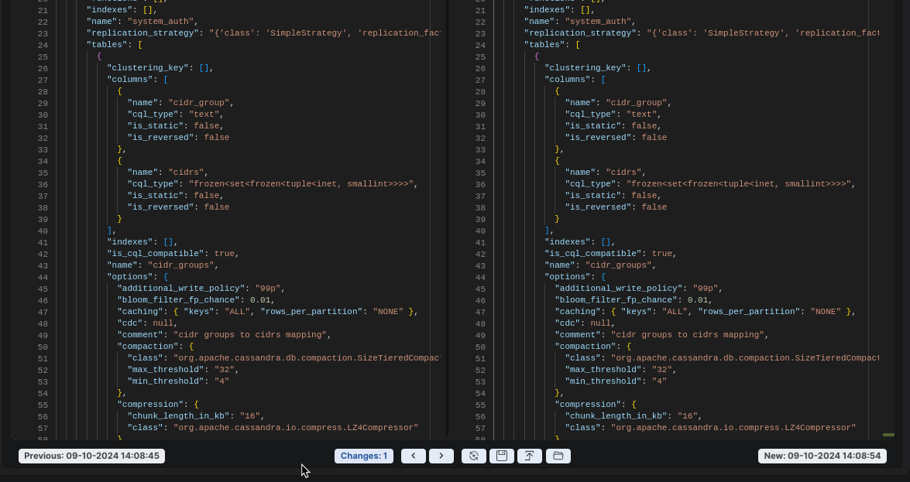
2.4.1.3.3.2.1.1.1.2.1.1.1  List showed up with one change - the start line of the change and it's content are clear -.
List showed up with one change - the start line of the change and it's content are clear -.
2.4.1.3.3.2.1.1.1.2.1.1.1.1  Click that change.
Click that change.
2.4.1.3.3.2.1.1.1.2.1.1.1.1.1  Both editors scrolled down automatcilly to the the target line.
Both editors scrolled down automatcilly to the the target line.
2.4.1.3.3.2.1.1.1.2.1.1.1.1.2  The difference between the versions of the metadata is clear.
The difference between the versions of the metadata is clear.
2.4.1.3.3.2.1.1.1.2.1.2  Click the badge again.
Click the badge again.
2.4.1.3.3.3 "Scheme Snapshots".
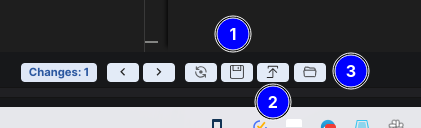
2.4.1.3.3.3.1 Save a snapshot.
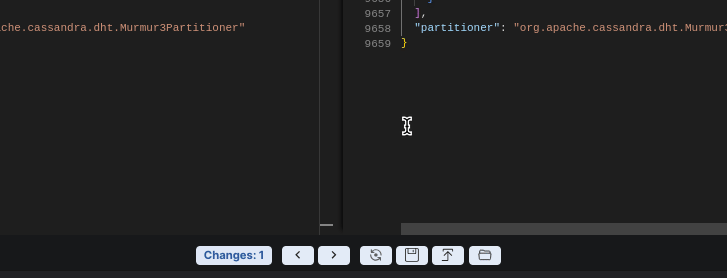
2.4.1.3.3.3.1.1 Click the disk icon #1  .
.
2.4.1.3.3.3.1.1.1 A related mini dialog showed up at the bottom of the window - as shown in the embedded GIF image -.
2.4.1.3.3.3.1.1.1.1 Click the button #1 without adding a suffix #2.
2.4.1.3.3.3.1.1.2 Click the icon #1 again .
2.4.1.3.3.3.1.1.2.1 Save the snapshot with any suffix.
2.4.1.3.3.3.2 List and load saved snapshots.
2.4.1.3.3.3.2.1 Click the load icon #2 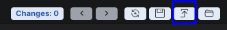.
2.4.1.3.3.3.2.1.1 A related dialog showed up at the top of the window.
2.4.1.3.3.3.2.1.1.1 There are two snapshots; the newest one with suffix is the first one in the list from top.
2.4.1.3.3.3.2.1.1.1.1 Click the load icon #1 for any of the saved snapshots.
2.4.1.3.3.3.2.1.1.1.1.1 The dialog has been closed automaitclly.
2.4.1.3.3.3.2.1.1.1.1.2 The saved snapshot has been loaded in the "previous" left editor #1.
2.4.1.3.3.3.2.1.1.1.1.3 Diff check has been autaomticlly tirggered, no changes has been detected now #2.
2.4.1.3.3.3.2.2 Click the load icon #2 again.
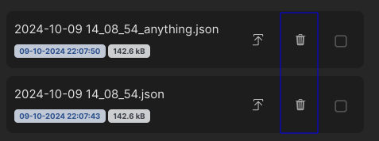
2.4.1.3.3.3.2.2.1 The related dialog showed up again at the top of the window.
2.4.1.3.3.3.2.2.2 Click the trash icon for any of the saved snapshots.
2.4.1.3.3.3.2.2.2.1 Click the "CANCEL" button #1.
2.4.1.3.3.3.2.2.2.2 Click the trash icon again.
2.4.1.3.3.3.2.2.2.2.1 Check the checkbox #2 and click the "CONFIRM" button #3.
2.4.1.3.3.3.2.2.2.2.1.1 The snapshot has been deleted.
2.4.1.3.3.3.2.2.2.2.1.1.1 Success message showed up.
2.4.1.3.3.3.2.2.2.2.1.1.2 The snapshot has been deleted from the list.
2.4.1.3.3.3.3 Open saved snapshots folder.
Click the folder icon #3  .
.
File explorer opened pointing at the save snapshots' folder for the current conncetion.
There are two snapshots, one of them is the deleted one with suffix DEL_{randomString}.
As we checked to keep the associated files in the system, the snapshot file has been kept in the folder.
2.4.1.3.3.3.4 Further tests for snapshots.
2.4.1.3.3.3.4.1 Create new table in the added keyspace test2.
2.4.1.3.3.3.4.1.1 From the metadata tree view (2.4.1.2), look for the keyspace test1, table test_table should be under Tables node of the keyspace based on test (2.4.1.3.1.1.4.2).
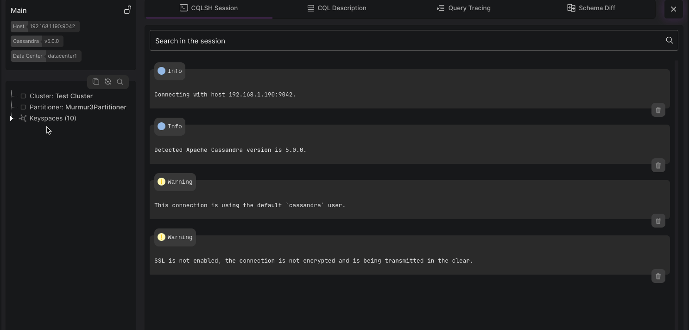
2.4.1.3.3.3.4.1.1.1 Right click on the table test_table, and get its cql description (2.4.1.3.2).
2.4.1.3.3.3.4.1.1.1.1 The workbench atuaomaticlly navigated to the "CQL Description" Section.
2.4.1.3.3.3.4.1.1.1.2 Copy the description to be used later on.
2.4.1.3.3.3.4.1.1.2 Back to the "CQLSH Session" section (2.4.1.3.1).
2.4.1.3.3.3.4.1.1.2.1 Paste the description in the execution input field, and execute it.
AlreadyExists: Table 'test1.test_table' already exists.2.4.1.3.3.3.4.1.1.2.2 Click the history icon (2.4.1.3.1.1.5.1).
test1 to be test2, execute the statement again.CQL statement executed.2.4.1.3.3.3.4.1.1.3 Back to the "Scheme Diff" section.
2.4.1.3.3.3.4.1.1.3.1 Click the refresh icon 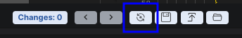.
2.4.1.3.3.3.4.1.1.3.2 Click the load icon again.
2.4.1.3.3.3.4.1.1.3.2.1 Check the checkboxes of both snapshots #1.
2.4.1.3.3.3.4.1.1.3.2.2 Click the button #2.
2.4.1.3.3.3.4.1.1.3.2.2.1 Check the checkboxes again #1.
2.4.1.3.3.3.4.1.1.3.2.2.1.1 Click the button #3.
2.4.1.3.3.3.4.1.1.3.2.2.1.1.1 A confirmation dialog showed up.
2.4.1.3.3.3.4.1.1.3.3 Click the load icon again.
2.4.1.3.3.3.4.1.1.3.4 Click the folder icon  .
.
2.4.1.3.3.3.4.1.1.3.4.1 File explorer opened pointing at the save snapshots' folder for the current conncetion.
DEL_{randomString}.2.4.1.3.4 "Close Workarea".
After doing decent number of tests for the work area, time to close it/decaticate the connection.
There are many ways to close the active workarea and decaticate the connection.
One is the close button
Xin the connection's work area (2.4.1.3) #1.Two by right mouse click the connection's switcher in the left panel and choose to close the work area - there're many upcoming tests for this part of the workbench -.
Three is by choosing to close all active work areas at once #3.
Four is by clicking the "DISCONNECT" button in the connection's card.
Under this test, the process will about the
Xbutton #1.
2.4.1.3.4.1 In the connection's work area (2.4.1.3), click the close button X at the top right side of the worka area.
The work area has been closed.
The workbench automaticlly naviagted to the connection's related workspace.
2.5.1 "Local Clusters" feature.